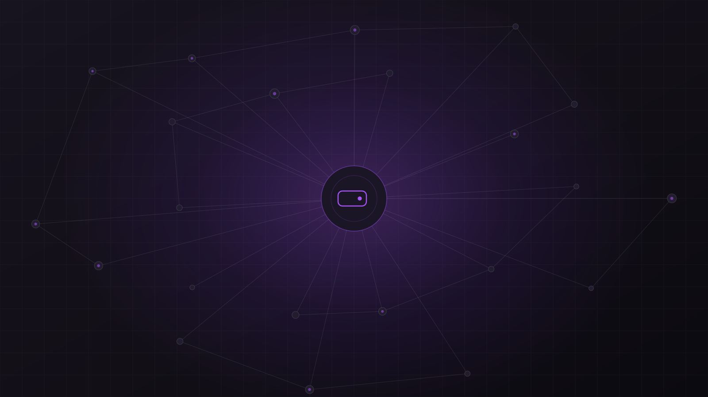

Нужно перевести деньги
Часть капитала нужно перевести за границу, между странами или просто вывести из привычной банковской системы.
30–60 минут · online · без обязательств
Записаться на личный звонок8 недель персонального сопровождения: разберёмся, как устроена крипта, научимся самостоятельно хранить и переводить активы и соберём вашу собственную систему работы с ними.
Неважно, деньги уже в крипте или вы только планируете ими пользоваться. Вопрос обычно один: что именно сейчас происходит и где здесь можно ошибиться?
Часть капитала нужно перевести за границу, между странами или просто вывести из привычной банковской системы.
USDT или другие активы уже лежат на бирже или кошельке, но пока непонятно, как их безопасно хранить и перемещать.
Покупка недвижимости, автомобиля, перевод накоплений или другой платёж, где цена ошибки уже ощутима.
До первой серьёзной операции хочется понять кошельки, сети, seed-фразы, комиссии и почему всё это работает не так, как привычный банк.
Перевод денег выглядит знакомо. Правила — совсем другие.
Иногда достаточно не понимать, что именно происходит на одном из этапов операции.
Не та сеть
Не тот адрес
Фишинговый сайт
Seed phrase
Фейковая поддержка
Вредоносный approval
Поддельный токен
Риск контрагента
Потеря доступа
Социальная инженерия
Риск площадки
Смарт-контракт
Личное сопровождение с теорией и практикой: разбираем, как всё устроено, и сразу применяем на ваших задачах — небольшими суммами и вашими руками.
Не курс в записи и не консультация на час. За два месяца вы сначала разбираетесь вместе со мной, а затем постепенно учитесь делать всё самостоятельно.
Как устроены блокчейн, кошельки, сети и комиссии
Восемь групповых занятий, где сложное разбираем нормальным языком и в том порядке, в котором вы столкнётесь с этим на практике.
Собственные операции на небольших суммах
Покупка, вывод, кошелёк, тестовый перевод, проверка через explorer — всё делаете вы сами, пока цена ошибки минимальна.
Человек рядом, пока вы набираете опыт
Персональные созвоны, закрытый чат и возможность подключиться в момент важной операции — чтобы первые серьёзные действия не приходилось делать в одиночку.
Короткая запись: разбираем реальный перевод шаг за шагом.

Я не продаю сигналы, торговые стратегии или «100x токены».
Здесь задача другая: понимать инструменты, видеть риски и самостоятельно принимать решения.
Как устроена криптоиндустрия и что означают основные термины.
Самостоятельно покупать, хранить, переводить и проверять операции.
Во время программы иметь рядом человека, которому можно задать вопрос и показать ситуацию.
Нужно уверенно пользоваться тем, что вам действительно необходимо.
Не для того, чтобы стать экспертом в каждой области. Для того, чтобы понимать, что вообще существует, зачем это нужно и как связано между собой.
Выберите элемент карты
Каждый блок мы разбираем на языке «что это, зачем существует и где вы можете с этим столкнуться» — без инвестиционных рекомендаций.
Каждая неделя — одна групповая встреча, персональные слоты и практика на небольших суммах. Нажмите на неделю, чтобы раскрыть содержание.
Начинаем с самой прикладной части: как привычные деньги превращаются в криптоактивы и что происходит на каждом шаге. Разберём, чем покупка через биржу отличается от P2P, зачем площадкам KYC, почему USDT и USDC — это не доллары на банковском счёте и откуда берутся комиссии.
Что разберём
После недели
Вы будете видеть весь маршрут от фиатных денег до крипты и сможете самостоятельно провести первую небольшую покупку.
Практика: первое пополнение и покупка USDT или USDC на небольшой сумме — полностью вашими руками.
Здесь собираем фундамент. Что на самом деле происходит внутри блокчейна, почему кошелёк не «хранит монеты» так, как банковское приложение хранит баланс, что такое публичный и приватный ключ и какую роль играет seed phrase. Отдельно — разница между хранением на бирже и собственным кошельком.
Что разберём
После недели
Вы будете понимать, где технически находятся ваши активы, кто контролирует доступ к ним и почему потеря seed phrase принципиально отличается от забытого банковского пароля.
Практика: создание собственного non-custodial кошелька и настройка базовой схемы хранения доступа.
Разбираем, почему «крипта» — это не одна технология. Какую задачу решает Bitcoin, зачем появился Ethereum и почему рядом существуют десятки других блокчейнов. На понятных схемах смотрим Proof of Work, майнинг, Proof of Stake и смарт-контракты.
Что разберём
После недели
Названия сетей перестанут выглядеть набором случайных брендов. Вы будете понимать, зачем существует каждая из основных архитектур и почему один и тот же актив ходит по разным сетям.
На личном созвоне можем разобрать подробнее ту сеть или актив, которые интересны именно вам.
Один из ключевых практических модулей. Разбираем путь транзакции от нажатия Send до появления средств у получателя: почему перед переводом проверяют не только адрес, но и сеть, что такое gas, подтверждения и memo / tag, зачем нужен explorer и почему крупную операцию почти всегда начинают с тестовой.
Что разберём
После недели
Вы сможете сами подготовить перевод, проверить параметры до отправки и затем найти и прочитать эту транзакцию в блокчейне.
Практика: несколько собственных переводов на небольших суммах между своими кошельками и аккаунтами.
После базовой инфраструктуры собираем общую карту индустрии. Не для того, чтобы научиться пользоваться каждым протоколом, а чтобы перестать теряться в словах и понимать, какую задачу решает каждый класс продуктов. Каждое направление разбираем по одной схеме: что это, зачем существует, как устроено на базовом уровне, где вы можете с этим столкнуться и какие тут риски.
Что разберём
После недели
Вы сможете открыть криптосервис или новость и в большинстве случаев понять, к какой части индустрии относится продукт и какую функцию он выполняет.
Это модуль «что есть что», а не «что покупать».
Целая неделя о том, как люди на самом деле теряют доступ к крипте и как действуют мошенники. Не ограничиваемся правилом «никому не показывайте seed phrase»: разбираем несколько классов атак и учимся замечать признаки опасной ситуации до того, как нажата кнопка Confirm.
Что разберём
После недели
Появляется не коллекция страшилок, а привычка останавливаться и проверять ситуацию, когда интерфейс, человек или операция ведут себя необычно.
Практика: собрать собственный security-чеклист и проверить по нему аккаунты, устройства и способы восстановления доступа.
Модуль не про трейдинг и не про прогнозы. Разбираем, почему рынок движется циклами, что меняется между его фазами, как ликвидность влияет на разные категории активов и почему Bitcoin, крупные альткоины и спекулятивные токены несут принципиально разный риск.
Что разберём
После недели
Прогноза рынка вы не получите, но будете лучше понимать контекст, в котором принимаете собственные решения.
Здесь же я разбираю несколько собственных рыночных ошибок и рассказываю, какие выводы из них сделал.
Последняя неделя собирает всё пройденное в одну систему — уже под конкретного участника. Задачи у всех разные: кому-то нужно безопасно хранить капитал, кому-то регулярно переводить деньги между странами, кому-то подготовиться к крупной покупке.
Что разберём
Итог
На выходе — понятная персональная карта движения средств и порядок действий под ваши реальные сценарии.
Лекции можно посмотреть где угодно. Сложности начинаются в момент, когда вы один на один со своим экраном и своей суммой.
Раз в неделю по два часа: примерно час материала и час вопросов, практики и разбора ситуаций участников.
Два слота в неделю по часу. Вы заранее готовите вопросы: ситуация, интерфейс, подготовка перевода, хранение.
По 30 минут — на момент важной операции, когда нужно убедиться, что вы понимаете каждое действие.
Основной режим — будни, рабочее время. По выходным доступность ниже. Не 24/7, но без вопросов без ответа.
Вы показываете экран. Я объясняю, куда смотреть: какая выбрана сеть, совпадает ли адрес, стоит ли сначала отправить тестовую сумму и какую информацию нельзя показывать никому — включая меня.
Все кнопки нажимаете вы сами.
Я не получаю доступ к вашим средствам и не совершаю операции за вас.
К примеру:
Разбираем конечную схему: откуда, куда, через что и в какие сроки.
Собираем инфраструктуру под эту задачу и проверяем доступы.
Небольшие операции по тому же маршруту, которым пойдёт основная сумма.
Письменный порядок действий на день операции.
При необходимости подключаемся созвоном в момент операции.
Вы выполняете её сами — уже не в первый раз в жизни.
Важная операция не должна быть первой практикой.
Около пяти лет я живу в Юго-Восточной Азии. Если вместе с криптой возникают практические вопросы о финансовой жизни в регионе — поделюсь собственным опытом.
Последние несколько лет я работаю с продуктами, которые на ней построены. Руковожу digital-агентством KERBER — 11+ лет в дизайне и разработке больших продуктов, значительная часть клиентов — Web3-компании.
В digital и технологиях: продукт, интерфейсы, запуски.
Непосредственно внутри Web3 — как специалист, а не как наблюдатель.
Агентство: брендинг, стратегия и UI/UX для технологических компаний.
Работа с экосистемой TON и создание собственного продукта внутри неё.
Опыт взаимодействия со стартап-студиями и венчурной средой.
Product, UX, механика кошельков, пользовательские сценарии, основы безопасности.
Проекты агентства
 IKEAАйдентика и сайт для проекта по защите окружающей среды
IKEAАйдентика и сайт для проекта по защите окружающей средыРыночные ошибки
Инфраструктурный урок
Однажды я купил токен в долгосрок и перестал следить за изменениями проекта. За это время произошла миграция, которую я пропустил, и в результате получил менее выгодные условия обмена. BIT → MNT.
В крипте даже «купить и забыть» требует понимать, чем именно ты владеешь.
Материалы в них одни и те же. Разница в одном: есть ли у вас прямой доступ ко мне.
Базовый
Самостоятельное прохождение.
8 групповых лекций, записи и дополнительные материалы.
8 общих лекций · личных созвонов нет
Личной обратной связи нет
Без личной обратной связи и разбора вашей ситуации.
Выбрать базовыйС личным сопровождением
Работа со мной на протяжении 8 недель.
Всё из базового формата плюс персональные созвоны, закрытая группа и разбор ваших задач.
8 общих лекций + 16 часов личных созвонов 1:1 со мной
Прямая связь со мной лично
Главная ценность этого формата — не больше контента, а прямой доступ ко мне на протяжении восьми недель.
Записаться на звонокФактическая сумма определяется по актуальному курсу на дату оплаты. Удобный способ оплаты обсуждаем отдельно.
Познакомимся, разберём вашу ситуацию и задачи и поймём, подходит ли вам этот формат.